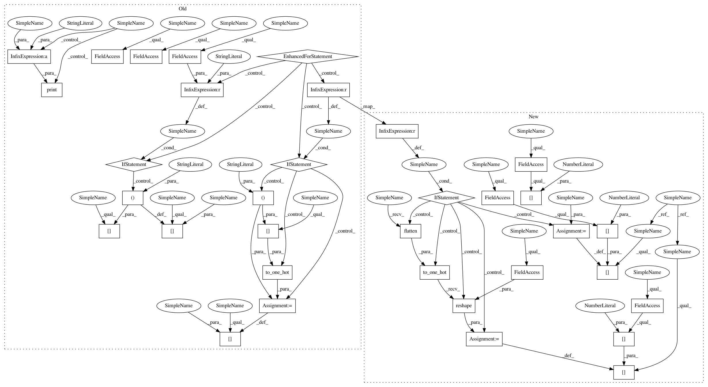

8375adccdb984204a235e426d28ed3d7aebd6360,deepchem/models/tensorgraph/models/graph_models.py,GraphConvModel,default_generator,#GraphConvModel#Any#Any#Any#Any#Any#,771
Before Change
pad_batches=True):
for epoch in range(epochs):
if not predict:
print("Starting epoch %i" % epoch)
for ind, (X_b, y_b, w_b, ids_b) in enumerate(
dataset.iterbatches(
self.batch_size,
pad_batches=pad_batches,
deterministic=deterministic)):
d = {}
for index, label in enumerate(self.my_labels):
if self.mode == "classification":
d[label] = to_one_hot(y_b[:, index])
if self.mode == "regression":
d[label] = np.expand_dims(y_b[:, index], -1)
d[self.my_task_weights] = w_b
multiConvMol = ConvMol.agglomerate_mols(X_b)
d[self.atom_features] = multiConvMol.get_atom_features()
d[self.degree_slice] = multiConvMol.deg_slice
After Change
self.batch_size,
pad_batches=pad_batches,
deterministic=deterministic)):
d = {}
if self.mode == "classification":
d[self.labels[0]] = to_one_hot(y_b.flatten(), self.n_classes).reshape(
-1, self.n_tasks, self.n_classes)
else:
d[self.labels[0]] = y_b
d[self.task_weights[0]] = w_b
multiConvMol = ConvMol.agglomerate_mols(X_b)
d[self.atom_features] = multiConvMol.get_atom_features()
d[self.degree_slice] = multiConvMol.deg_slice
In pattern: SUPERPATTERN
Frequency: 3
Non-data size: 34
Instances
Project Name: deepchem/deepchem
Commit Name: 8375adccdb984204a235e426d28ed3d7aebd6360
Time: 2018-04-17
Author: peastman@stanford.edu
File Name: deepchem/models/tensorgraph/models/graph_models.py
Class Name: GraphConvModel
Method Name: default_generator
Project Name: deepchem/deepchem
Commit Name: 8375adccdb984204a235e426d28ed3d7aebd6360
Time: 2018-04-17
Author: peastman@stanford.edu
File Name: deepchem/models/tensorgraph/models/graph_models.py
Class Name: GraphConvModel
Method Name: default_generator
Project Name: deepchem/deepchem
Commit Name: f1415632872a5f7966d98d714ae84683c5e33723
Time: 2018-12-25
Author: vsomnath@student.ethz.ch
File Name: deepchem/models/tensorgraph/models/text_cnn.py
Class Name: TextCNNModel
Method Name: default_generator
Project Name: deepchem/deepchem
Commit Name: a453eb76dddb37e087c12d4173033372bc56f9c3
Time: 2018-04-19
Author: peastman@stanford.edu
File Name: deepchem/models/tensorgraph/models/graph_models.py
Class Name: DAGModel
Method Name: default_generator